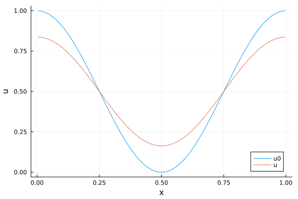

Tutorial: Solution of the heat equation with Neumann boundary conditions
Similar to the tutorial on linear advection, we will demonstrate how to solve a conservative production-destruction system (PDS) resulting from a PDE discretization and means to improve the performance.
Definition of the conservative production-destruction system
Consider the heat equation
\[\partial_t u(t,x) = \mu \partial_x^2 u(t,x),\quad u(0,x)=u_0(x),\]
with $μ ≥ 0$, $t≥ 0$, $x\in[0,1]$, and homogeneous Neumann boundary conditions. We use a finite volume discretization, i.e., we split the domain $[0, 1]$ into $N$ uniform cells of width $\Delta x = 1 / N$. As degrees of freedom, we use the mean values of $u(t)$ in each cell approximated by the point value $u_i(t)$ in the center of cell $i$. Finally, we use the classical central finite difference discretization of the Laplacian with homogeneous Neumann boundary conditions, resulting in the ODE
\[\partial_t u(t) = L u(t), \quad L = \frac{\mu}{\Delta x^2} \begin{pmatrix} -1 & 1 \\ 1 & -2 & 1 \\ & \ddots & \ddots & \ddots \\ && 1 & -2 & 1 \\ &&& 1 & -1 \end{pmatrix}.\]
The system can be written as a conservative PDS with production terms
\[\begin{aligned} &p_{i,i-1}(t,\mathbf u(t)) = \frac{\mu}{\Delta x^2} u_{i-1}(t),\quad i=2,\dots,N, \\ &p_{i,i+1}(t,\mathbf u(t)) = \frac{\mu}{\Delta x^2} u_{i+1}(t),\quad i=1,\dots,N-1, \end{aligned}\]
and destruction terms $d_{i,j} = p_{j,i}$. In addition, all production and destruction terms not listed are zero.
Solution of the conservative production-destruction system
Now we are ready to define a ConservativePDSProblem and to solve this problem with a method of PositiveIntegrators.jl or OrdinaryDiffEq.jl. In the following we use $N = 100$ nodes and the time domain $t \in [0,1]$. Moreover, we choose the initial condition
\[u_0(x) = \cos(\pi x)^2.\]
x_boundaries = range(0, 1, length = 101)x = x_boundaries[1:end-1] .+ step(x_boundaries) / 2u0 = @. cospi(x)^2 # initial solutiontspan = (0.0, 1.0) # time domainWe will choose three different matrix types for the production terms and the resulting linear systems:
- standard dense matrices (default)
- sparse matrices (from SparseArrays.jl)
- tridiagonal matrices (from LinearAlgebra.jl)
Standard dense matrices
using PositiveIntegrators # load ConservativePDSProblemfunction heat_eq_P!(P, u, μ, t) fill!(P, 0) N = length(u) Δx = 1 / N μ_Δx2 = μ / Δx^2 let i = 1 # Neumann boundary condition P[i, i + 1] = u[i + 1] * μ_Δx2 end for i in 2:(length(u) - 1) # interior stencil P[i, i - 1] = u[i - 1] * μ_Δx2 P[i, i + 1] = u[i + 1] * μ_Δx2 end let i = length(u) # Neumann boundary condition P[i, i - 1] = u[i - 1] * μ_Δx2 end return nothingendμ = 1.0e-2prob = ConservativePDSProblem(heat_eq_P!, u0, tspan, μ) # create the PDSsol = solve(prob, MPRK22(1.0); save_everystep = false)using Plotsplot(x, u0; label = "u0", xguide = "x", yguide = "u")plot!(x, last(sol.u); label = "u")
Sparse matrices
To use different matrix types for the production terms and linear systems, you can use the keyword argument p_prototype of ConservativePDSProblem and PDSProblem.
using SparseArraysp_prototype = spdiagm(-1 => ones(eltype(u0), length(u0) - 1), +1 => ones(eltype(u0), length(u0) - 1))prob_sparse = ConservativePDSProblem(heat_eq_P!, u0, tspan, μ; p_prototype = p_prototype)sol_sparse = solve(prob_sparse, MPRK22(1.0); save_everystep = false)plot(x, u0; label = "u0", xguide = "x", yguide = "u")plot!(x, last(sol_sparse.u); label = "u")Tridiagonal matrices
The sparse matrices used in this case have a very special structure since they are in fact tridiagonal matrices. Thus, we can also use the special matrix type Tridiagonal from the standard library LinearAlgebra.
using LinearAlgebrap_prototype = Tridiagonal(ones(eltype(u0), length(u0) - 1), ones(eltype(u0), length(u0)), ones(eltype(u0), length(u0) - 1))prob_tridiagonal = ConservativePDSProblem(heat_eq_P!, u0, tspan, μ; p_prototype = p_prototype)sol_tridiagonal = solve(prob_tridiagonal, MPRK22(1.0); save_everystep = false)plot(x, u0; label = "u0", xguide = "x", yguide = "u")plot!(x, last(sol_tridiagonal.u); label = "u")Performance comparison
Finally, we use BenchmarkTools.jl to compare the performance of the different implementations.
using BenchmarkTools@benchmark solve(prob, MPRK22(1.0); save_everystep = false)BenchmarkTools.Trial: 1258 samples with 1 evaluation per sample.
Range (min … max): 3.409 ms … 10.208 ms ┊ GC (min … max): 0.00% … 57.77%
Time (median): 3.940 ms ┊ GC (median): 0.00%
Time (mean ± σ): 3.974 ms ± 433.323 μs ┊ GC (mean ± σ): 0.12% ± 1.63%
▄▆ ▂▁▄▃▃▁ ▅█▆▂
▇███▆██████▆█▆▇▇▇▆▆▅▅▆██████▅▅▅▅▅▅▆▅▅▃▃▃▂▂▃▁▁▂▁▁▂▁▁▁▁▂▂▁▁▂▂ ▄
3.41 ms Histogram: frequency by time 5.3 ms <
Memory estimate: 171.67 KiB, allocs estimate: 64.@benchmark solve(prob_sparse, MPRK22(1.0); save_everystep = false)BenchmarkTools.Trial: 1812 samples with 1 evaluation per sample.
Range (min … max): 2.152 ms … 5.476 ms ┊ GC (min … max): 0.00% … 36.75%
Time (median): 2.462 ms ┊ GC (median): 0.00%
Time (mean ± σ): 2.760 ms ± 803.806 μs ┊ GC (mean ± σ): 9.81% ± 13.83%
█▁
▆▇▇▆▆▇██▇▇▃▂▂▂▂▂▂▂▂▂▂▁▂▁▁▁▁▂▁▁▁▁▁▁▁▂▁▁▁▁▁▂▂▂▂▃▃▃▂▃▂▃▃▃▃▃▃▂▂ ▃
2.15 ms Histogram: frequency by time 4.93 ms <
Memory estimate: 4.77 MiB, allocs estimate: 2229.By default, we use an LU factorization for the linear systems. At the time of writing, Julia uses SparseArrays.jl defaulting to UMFPACK from SuiteSparse in this case. However, the linear systems do not necessarily have the structure for which UMFPACK is optimized for. Thus, it is often possible to gain performance by switching to KLU instead.
using LinearSolve@benchmark solve(prob_sparse, MPRK22(1.0; linsolve = KLUFactorization()); save_everystep = false)BenchmarkTools.Trial: 9048 samples with 1 evaluation per sample.
Range (min … max): 420.511 μs … 567.050 ms ┊ GC (min … max): 0.00% … 99.60%
Time (median): 464.426 μs ┊ GC (median): 0.00%
Time (mean ± σ): 552.362 μs ± 6.046 ms ┊ GC (mean ± σ): 14.25% ± 2.40%
▂▅█▇█▇▇█▇▇▅▂▂▁▁ ▃▆▆▇▆▄▁▁▁
▂▃▄▇████████████████▇▆▅▄▃▅▆▇███████████▇▆▆▅▅▆▅▅▅▄▄▃▃▃▂▂▂▂▁▁▁▁ ▅
421 μs Histogram: frequency by time 551 μs <
Memory estimate: 107.76 KiB, allocs estimate: 178.@benchmark solve(prob_tridiagonal, MPRK22(1.0); save_everystep = false)BenchmarkTools.Trial: 10000 samples with 1 evaluation per sample.
Range (min … max): 161.865 μs … 4.203 ms ┊ GC (min … max): 0.00% … 95.09%
Time (median): 183.512 μs ┊ GC (median): 0.00%
Time (mean ± σ): 194.549 μs ± 217.322 μs ┊ GC (mean ± σ): 6.64% ± 5.66%
▂ ▁▃ █▆ ▁
▄█▇▃▃██▇▄▃▅▆▅▄▃▂▂▃▃▂▄███▄▃▃██▆▃▃▃▆▇▅▃▃▂▃▄▃▃▂▂▂▂▂▂▂▂▂▂▂▂▂▂▁▂▂▂ ▃
162 μs Histogram: frequency by time 223 μs <
Memory estimate: 133.67 KiB, allocs estimate: 393.Package versions
These results were obtained using the following versions.
using InteractiveUtilsversioninfo()println()using PkgPkg.status(["PositiveIntegrators", "SparseArrays", "KLU", "LinearSolve"], mode=PKGMODE_MANIFEST)Julia Version 1.12.7
Commit 6d172b025e4 (2026-08-15 08:05 UTC)
Build Info:
Official https://julialang.org release
Platform Info:
OS: Linux (x86_64-linux-gnu)
CPU: 4 × INTEL(R) XEON(R) PLATINUM 8573C
WORD_SIZE: 64
LLVM: libLLVM-18.1.7 (ORCJIT, sapphirerapids)
GC: Built with stock GC
Threads: 1 default, 1 interactive, 1 GC (on 4 virtual cores)
Environment:
JULIA_PKG_SERVER_REGISTRY_PREFERENCE = eager
Status `~/work/PositiveIntegrators.jl/PositiveIntegrators.jl/docs/Manifest.toml`
[7ed4a6bd] LinearSolve v5.13.2
[d1b20bf0] PositiveIntegrators v0.2.19 `~/work/PositiveIntegrators.jl/PositiveIntegrators.jl`
[2f01184e] SparseArrays v1.12.0